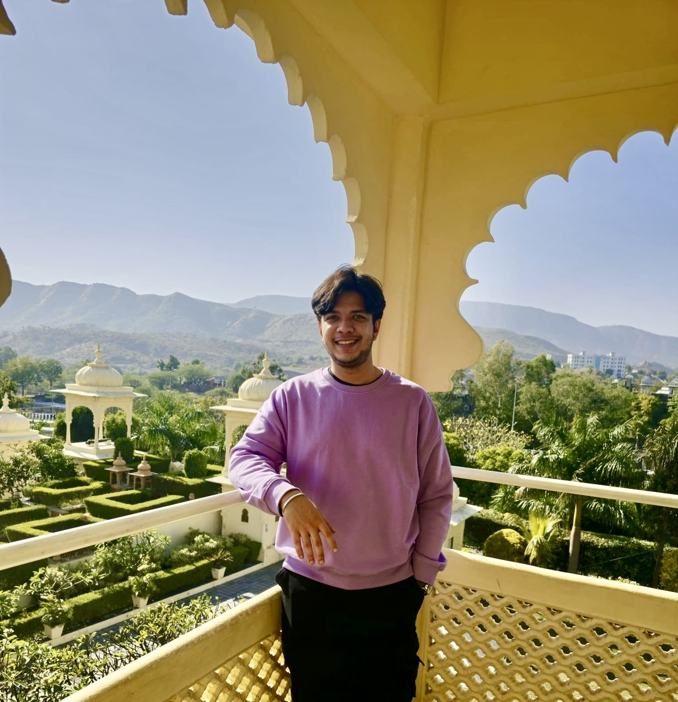

Wanted to be an astronaut.
Ended up being interested in the markets.
I build quantitative tools at the intersection of machine learning and financial markets — from alternative data pipelines to order book engines. Currently exploring how messy real-world data can sharpen market predictions.

Merges USDA crop condition reports, NOAA Palmer Drought Severity Index, and CBOT corn futures to engineer novel cross-domain features. The drought × crop condition interaction term is the single strongest predictor — invisible to price-only models.
A high-performance order book matching engine implementing price-time priority. Supports limit and market orders, partial fills, and real-time mid-price and spread calculations.
NLP pipeline that classifies market-relevant tweets and explores the relationship between retail sentiment and short-term price movements in equities.
Applies clustering and dimensionality reduction techniques to identify latent market regimes and construct regime-conditional trading strategies across equity markets.
I'm Aniruddh — a quantitative finance enthusiast who took a detour from childhood dreams of space exploration and found something equally complex: financial markets.
My work sits at the intersection of machine learning and market structure. I'm particularly drawn to alternative data — finding signals in places most people don't think to look, whether that's USDA crop reports, satellite imagery, or social media.
This portfolio is a living record of that exploration. Projects here are built to learn, not to trade. Nothing here is financial advice — just a person trying to understand how the world prices things.